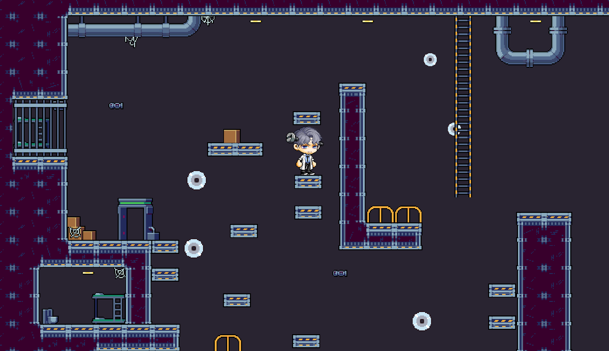

a 2D platformer inspired by MapleStory

JUMPER is a 2D platformer game inspired by the iconic jump quests in MapleStory. Developed in Unity, this project focuses on creating a challenging yet enjoyable experience through precise mechanics, animations, and level design.
The development began with setting up the foundational structure, including tilemaps, sorting layers, and custom animations. I implemented key mechanics such as walking, jumping, crouching, climbing, and knockback using Unity's Rigidbody2D and Animator components. Movement and collision detection were refined for responsive and immersive gameplay, ensuring a smooth player experience.
Level design required precise platform placement, complemented by a Cinemachine-powered camera system that follows the player while staying within the playable area. UI elements, including a custom main menu and loading screens, were designed to provide a polished game flow.
Every aspect of the game, from animation transitions to camera mechanics, was coded and tested in Unity, avoiding pre-built assets to maintain creative control. This hands-on approach enhanced my coding and game development skills, culminating in a platformer that balances challenge and accessibility.